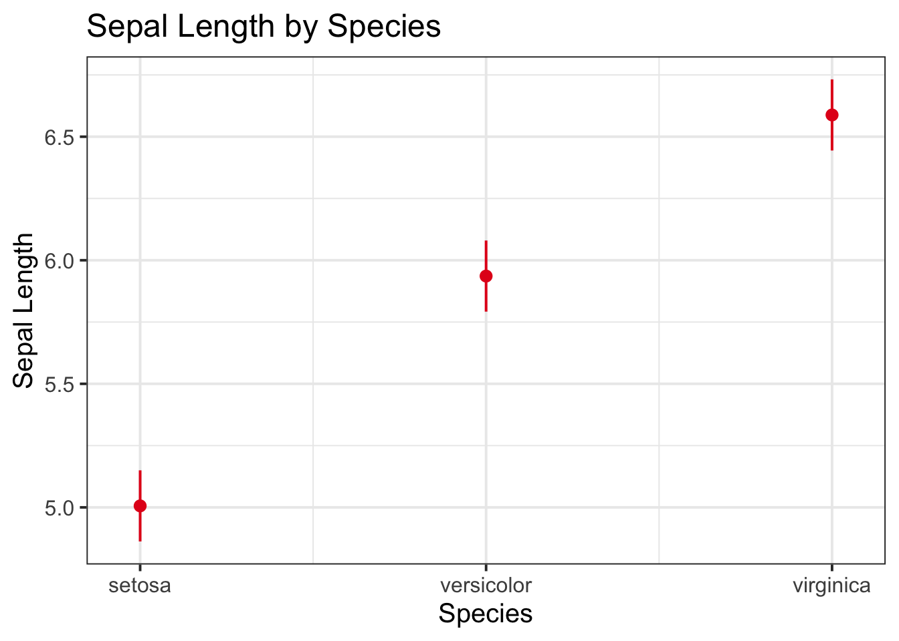
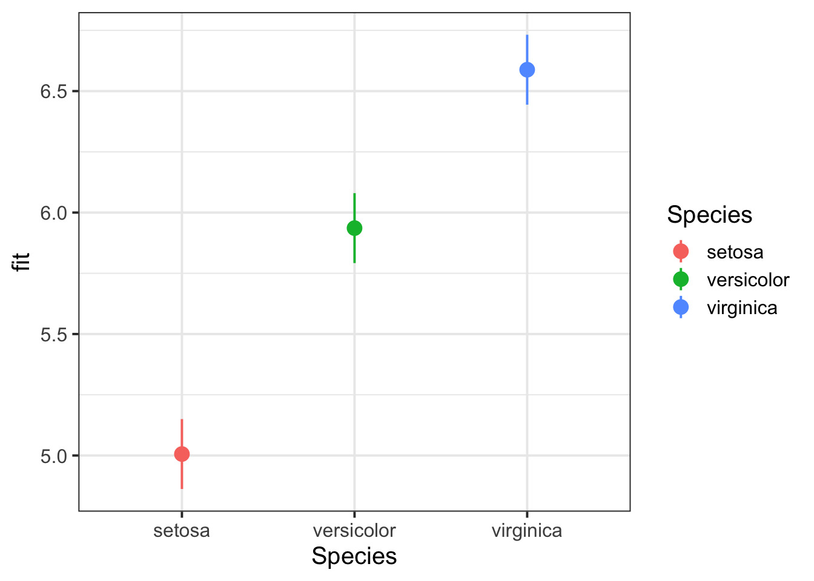

A common alternative to treatment coding is called sum coding.
It’s easiest to see how it works using examples.
Research Question
Does the sepal length of particular iris species differ significantly from the average sepal length?
Example: Binary predictor
You have been provided with the in-built dataset, iris, which contains information concerning the sepal length (in cm), sepal width (in cm), petal length (in cm), and petal width (in cm) from three different species of iris (setosa, versicolor, and virginica). There are measurements for 50 flowers from each of the iris species (i.e., total \(n\) = 150). For this example, we’ll just look at two species, setosa and versicolor.
iris_binary <- iris |># filter out virginicafilter(Species !='virginica') |># the only factor levels we want are the two species we're keepingmutate(Species =factor(Species, levels =c('setosa', 'versicolor')))head(iris_binary)
(If this code doesn’t run for your variable, then you’ll probably need to convert your variable to a factor using factor()).
This contrast matrix shows us that setosa is represented as 1, and versicolor is represented as –1. These two values are centered around 0, so 0 will represent the mean, the average, between these two species.
When we fit a linear model to this data, the model’s intercept will represent the grand mean sepal length: that is, the mean of both species’ mean sepal lengths. And the model’s slope over Species will represent the estimated difference between the mean sepal length for setosa (the level coded as 1) and the grand mean. Or, in other words, how sepal length changes when we move from the grand mean to the mean of setosa.
Model fit and interpretation
m1 <-lm(Sepal.Length ~ Species, data = iris_binary)summary(m1)
Call:
lm(formula = Sepal.Length ~ Species, data = iris_binary)
Residuals:
Min 1Q Median 3Q Max
-1.036 -0.314 -0.006 0.272 1.064
Coefficients:
Estimate Std. Error t value Pr(>|t|)
(Intercept) 5.4710 0.0442 123.8 <2e-16 ***
Species1 -0.4650 0.0442 -10.5 <2e-16 ***
---
Signif. codes: 0 '***' 0.001 '**' 0.01 '*' 0.05 '.' 0.1 ' ' 1
Residual standard error: 0.442 on 98 degrees of freedom
Multiple R-squared: 0.53, Adjusted R-squared: 0.526
F-statistic: 111 on 1 and 98 DF, p-value: <2e-16
The intercept is 5.47, which corresponds to the grand mean sepal length (i.e., the mean of the two group means):
# A tibble: 2 × 2
Species m
<fct> <dbl>
1 setosa 5.01
2 versicolor 5.94
mean(c(5.01, 5.94))
[1] 5.47
And the slope is –0.47, which corresponds (with some rounding error) to the difference between the setosa mean of 5.01 and the grand mean of 5.47.
5.01-5.47
[1] -0.46
Example: Three-level predictor
Sum coding is a lot more useful/intuitive for binary predictors than for three-level predictors, in Elizabeth’s opinion. But for completeness: let’s bring back all three species of iris to see what happens when we have three levels.
Read this contrast matrix as a table with three rows and two columns.
The first column shows the first variable, which will estimate the difference between the mean sepal length of setosa (coded as 1 in that column) and the grand mean sepal length of all three species. The second column shows the second variable, which will estimate the difference between the mean sepal length of versicolor (coded as 1 in that column) and the grand mean sepal length of all three species.
When we use Species as a predictor in a model, each of these variables will receive its own coefficient in the model summary. That coefficient represents the comparisons described for each variable.
Model fit and interpretation
m2 <-lm(Sepal.Length ~ Species, data = iris)summary(m2)
Call:
lm(formula = Sepal.Length ~ Species, data = iris)
Residuals:
Min 1Q Median 3Q Max
-1.688 -0.329 -0.006 0.312 1.312
Coefficients:
Estimate Std. Error t value Pr(>|t|)
(Intercept) 5.8433 0.0420 139.02 <2e-16 ***
Species1 -0.8373 0.0594 -14.09 <2e-16 ***
Species2 0.0927 0.0594 1.56 0.12
---
Signif. codes: 0 '***' 0.001 '**' 0.01 '*' 0.05 '.' 0.1 ' ' 1
Residual standard error: 0.515 on 147 degrees of freedom
Multiple R-squared: 0.619, Adjusted R-squared: 0.614
F-statistic: 119 on 2 and 147 DF, p-value: <2e-16
The intercept is 5.84, which corresponds (with some rounding error) to the grand mean sepal length (i.e., the mean of the three group means):
# A tibble: 3 × 2
Species m
<fct> <dbl>
1 setosa 5.01
2 versicolor 5.94
3 virginica 6.59
mean(c(5.01, 5.94, 6.59))
[1] 5.85
The slope coefficient Species1 is –0.84, which corresponds to the difference between the setosa mean of 5.01 and the grand mean of 5.85.
5.01-5.85
[1] -0.84
And the slope coefficient Species2 is 0.09, which corresponds to the difference between the versicolor mean of 5.94 and the grand mean of 5.85.
5.94-5.85
[1] 0.09
Plotting model-fitted values
There are a couple of ways that we can visualise a model of categorical predictors, either using the sjPlot or effects packages:
library(sjPlot)plot_model(m2,type ="eff",terms ="Species") +labs(title ="Sepal Length by Species",x ="Species", y ="Sepal Length")

library(effects)effect(term =c("Species"), mod = m2) |>as.data.frame() |>ggplot(aes(x = Species, y = fit, col = Species)) +geom_pointrange(aes(ymin = lower, ymax = upper))

Reporting sum coding (three-level example)
Variables
$$
\text{Species1} = \begin{cases}
1 & \text{if Species is Setosa} \\
0 & \text{if Species is Versicolor} \\
-1 & \text{if Species is Virginica}
\end{cases}
$$
\[
\text{Species1} = \begin{cases}
1 & \text{if Species is Setosa} \\
0 & \text{if Species is Versicolor} \\
-1 & \text{if Species is Virginica}
\end{cases}
\]
$$
\text{Species2} = \begin{cases}
0 & \text{if Species is Setosa} \\
1 & \text{if Species is Versicolor} \\
-1 & \text{if Species is Virginica}
\end{cases}
$$
\[
\text{Species2} = \begin{cases}
0 & \text{if Species is Setosa} \\
1 & \text{if Species is Versicolor} \\
-1 & \text{if Species is Virginica}
\end{cases}
\]
For all coefficients, linear models always test the null hypothesis that the coefficient is equal to zero.
More specifically, for the mathematical model specified above:
For the intercept: the null hypothesis H0 is that the grand mean outcome is equal to zero. The alternative hypothesis H1 is that the grand mean outcome is different from zero. (This isn’t usually interesting to test, because the intercept will nearly always be different from zero.)
For a single slope coefficient (let’s say \(\beta_1\)): the null hypothesis is that the difference between the \(\beta_1\)’s level coded as 1 and the grand mean is equal to zero. And the alternative hypothesis is thatthe difference between the \(\beta_1\)’s level coded as 1 and the grand mean is different from zero.
For all slope coefficients: the null hypothesis is that the differences between all levels coded as 1 and the grand mean are equal to zero. And the alternative hypothesis is that any difference between any level coded as 1 and the grand mean is different from zero.
Choose your contrast coding scheme based on the hypotheses you want to test.
For example: If your RQ asks whether particular groups differ from the grand mean, this question can be tested by looking at a slope coefficient of a sum-coded categorical predictor where the particular group you’re interested in is coded as 1.
Changing which levels are coded as 1
Imagine if we wanted the Species1 coefficient to compare the grand mean to virginica instead of setosa.
To do this, reorder the factor levels using factor(). The level which appears last will not be compared to the grand mean by any of the regression coefficients.
Beware that some people will also use these labels to refer to a similar contrast coding scheme which uses –0.5 and 0.5 instead of –1 and 1. For that reason, it’s best to explicitly report what numbers you’re using for which levels. That way, the reader knows exactly what you’re doing.